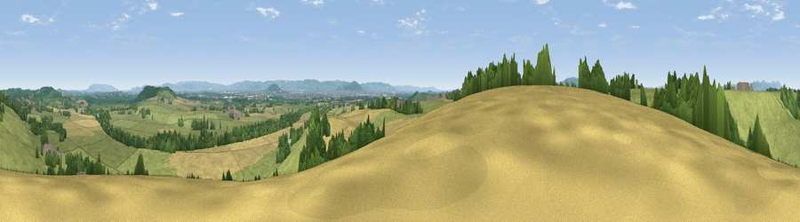

Viewpoint near Hartpury
#19351 in England · top 40% of its area beats it · near Hartpury · path 263 mWhere it is
The exact computed spot (SO 80725 23775). Click the marker for map links.
Public access: the nearest public right of way is about 263 m away — the final stretch may cross private land. Computed from Natural England's CRoW access layer and OpenStreetMap rights of way — not the legal definitive map. Always verify locally.
The view, rendered

A 360° render of this exact spot computed from the terrain model, tree cover and land cover — summer colours, afternoon light, calibrated against photographs of famous viewpoints. Real trees, hedges and buildings will differ in detail.
The panorama
Grey silhouette: terrain skyline in each direction (720 bearings, Earth curvature and refraction included). Dashed green: skyline with trees (+15 m) and buildings (+8 m) as obstacles. Blue strip: how far the ground is visible on each bearing.
Where the view opens
Wedge length = distance to the farthest visible ground on that bearing (vegetation-aware). Rings at 10, 25 and 50 km.
What fills the view
60% grassland · 22% cropland · 14% woodland · 2% built-up · 1% water
Angular shares of the visible panorama (visual magnitude), not map area. Landscape diversity 0.45 (0–1 Shannon).
Key numbers
More beautiful places nearby
The staircase of upgrades: each row has a higher view potential than everything closer. Driving times are estimates from straight-line distance, calibrated against real road routing — check an actual route before setting out.
| Place | Direction | Drive | Score |
|---|---|---|---|
| Viewpoint near Hartpury | N · 1 km | ~3 min | 60.0 |
| Viewpoint near Sandhurst | ENE · 3 km | ~7 min | 66.7 |
| Corse Grove Hill | NNE · 5 km | ~11 min | 67.6 |
| Viewpoint near Churchdown | ESE · 9 km | ~17 min | 74.6 |
| Viewpoint near Whaddon | SSE · 9 km | ~18 min | 77.7 |
| Viewpoint near Brookthorpe | SSE · 12 km | ~23 min | 78.0 |
| Viewpoint near Great Witcombe | SE · 12 km | ~23 min | 80.5 |
| Chase End Hill | NNW · 13 km | ~23 min | 81.5 |
51.91217, -2.28162 · source: screening · position refined by local search. Computed location — check access rights before visiting.